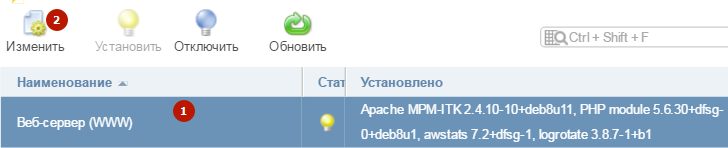
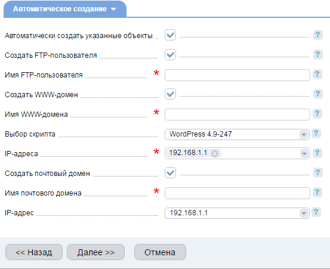
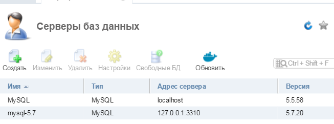

Sheensay
→ Серверная
→ ISPmanager
ISPmanager
Что
такое ISPmanager
ISPmanager
— это панель управления сервером,
предназначенная для лёгкого решения
сложных проблем установки и настройки
серверного программного обеспечения.
Чаще всего применяется в Linux: Debian, Ubuntu,
CentOS, FreeBDS, Fedora.
Как правило, чистый
сервер не предоставляет функционала
графического управления сервером,
привычного для пользователя Windows.
ISPmanager призван решать эту и много других
проблем.
Официальный
сайт ISPmanager
Панель
ISPmanager 5 — что умеет и что можно сделать
-
Организовать
хостинг
-
Панель
ISPmanager позволяет разделить реальный
физический сервер на несколько
виртуальных. Поэтому, с её помощью Вы
сможете, например, организовать свой
хостинг с чётким разграничением
серверных ресурсов между его
пользователями. Также, ISPmanager 5 помогает
организовать управление пользователями
(создание, редактирование, удаление,
выставление лимитов — ограничений).
Пользователи имеют только тот функционал,
который им разрешён.
-
Создать
веб-сервера
-
ISPmanager
5 обладает весьма большим потенциалом.
Чаще всего, конечно, его используют
для организации и управления веб-сервисом,
создания окружения под сайты, а именно:
-
Установка
и настройка NGINX,
Apache,
PHP-FPM, MySQL, MariaDB, а также шаблонизатор
их конфигурации;
-
Получение
и установка бесплатного SSL-сертификата
от Let’s Encrypt;
-
Отслеживание
потребления ресурсов: процессора,
оперативной памяти, размера занятого
пространства диска, файла
подкачки (swap),
и так далее.
-
Ведение
и ротация логов с помощью Webalizer,
Logrotate.
-
Настроить
почтовый сервер
-
Возможно
лёгкое создание и управление почтовыми
доменами, ящиками. Настройка редиректов
и алиасов, спам-фильтров, DKIM и SpamAssassin
(подробнее)
-
Создать
вебсайт
-
В
один клик можно создать среду под сайт,
тут же установить чистую CMS, выбрав из
набора самых популярных и бесплатных:
WordPress, Joomla, Drupal, Prestashop, phpBB и других.
Удобный менеджер управления файлами
вебсайтов. Подробнее.
Установка
ISPManager в Debian, Ubuntu вручную
ISPManager
устанавливается только на чистый
сервер, без установленного PHP, MySQL,
Apache, NGINX. Всё это можно будет установлено
в процессе, доустановить и донастроить
можно позже.
Далее
происходит установка. Нужно следовать
инструкциям на экране. Сначала скрипт
установки покажет нам данные системы,
свободную память и место на диске.
Если
с ними всё в порядке, далее, предложит
выбрать, какую версию выбрать, b)
— бета версию с новейшими функциями,
либо s)
— стабильную и проверенную временем.
Рекомендую выбирать стабильную, вводим
s,
затем Enter.
Далее,
выбираем дистрибутив из списка.
На
выбор ISPmanager, VDSmanager, DCImanager, DNSmanager,
IPmanager, BILLmanager. Выбираем 1.
Далее,
на выбор будет версия ISPmanager Lite, Minimal,
Business.
Выбирайте
ту, на которую у вас лицензия. В моём
случае, это ISPmanager
Lite,
то есть вводим 1.
На
этом настройка завершена, скрип пойдёт
собирать систему, Вам остаётся только
ждать окончания работы.
В конце
работы, в результате увидите инструкцию
для авторизации в ISPmanager:
ispmanager-lite is installed
Go to the "https://l134a8fc.justinstalledpanel.com:1500/ispmgr" to login
Login: root
Password:
If this doesn't work you can use IP instead of domain
Like: "https://192.168.1.1:1500/ispmgr"
Как
зайти в ISPManager
Авторизоваться
в панели ISPManager можно так:
Либо
по адресу
https://l134a8fc.justinstalledpanel.com:1500/ispmgr
(этот адрес выдаётся при установке
ISPmanager);
Либо,
что проще запомнить,
https://192.168.1.1:1500/ispmgr
(Здесь вместо 192.168.1.1
подставьте IP Вашего сервера).
Логин:
root,
пароль — от root сервера, есть в письме
об открытии сервера. Если нет — уточните
в службе поддержки хостинга. Как вариант,
можно восстановить
пароль от ISPmanager
При
попытке открыть ISPmanager выскакивает
предупреждение о небезопасном соединении
Так
как адрес на HTTPS,
а на нём нет серификата, то попытка
авторизоваться в Mozilla Firefox может
закончиться неудачей. Рекомендую
воспользоваться Chrome или Яндекс Браузером,
и не обращать внимания на предупреждения
о небезопасном соединении.
Вот
пример, как авторизоваться в ISPmanager с
помощью Яндекс Браузера или Google Chrome:
Переходите
по адресу https://192.168.1.1:1500/ispmgr
(IP сервера Ваш);
Видите
предупреждение системы безопасности,
жмёте Подробности;
Ниже
жмёте Сделать
исключение для этого сайта.
Вуаля,
форма авторизации в панели ISPmanager
доступна, пользуйтесь.
Как
правильно настроить ISPmanager
А
точнее, как правильно настроить сервер
под управлением ISPmanager.
По умолчанию,
в ISPmanager работа в бекенде идёт под Apache.
Я считаю, что оптимальнее для вебсервера
иметь во фронтенде NGINX,
а в бекенде PHP-FPM, так как он производительнее
и проще в настройке. Такую возможность
и настроим.
Установка
NGINX и PHP-FPM в ISPmanager
Слева
в боковом меню находим пункт Настройки
— Возможности
Выбираем
пункт Веб-сервер
(WWW)
— Изменить

Добавляем
галочки напротив NGINX
и PHP-FPM
FastCGI,
сохраняем изменения.

Обязательно
дожидаемся окончания установки NGINX и
PHP-FPM.
Как
изменить версию PHP
По
умолчанию, вебсервер поддерживает
версию PHP 5.6. Но Вы можете включить любую
другую альтернативную версию, выбрав
её в Возможностях.
Всё аналогично инструкции выше.
Настройка
шаблонов в ISPmanager
Далее,
стоит настроить шаблоны, чтобы в 1 клик
собирать нужную конструкцию для нового
пользователя и проекта.
В
боковом меню слева находим Настройки
— Шаблоны,
создаём новый;
Название
можно поставить любое, например «NGINX
+ PHP-FPM». Остальные параметры можете
оставить по умолчанию, главное отметить
галочками пункты: Может
использовать PHP в режиме FastCGI (Nginx +
PHP-FPM)
и Тип
обработчика PHP
поставить FastCGI
(NGINX + PHP-FPM).
Сохранить изменения
Настройка
шаблонизатора конфигурационных файлов
в ISPmanager
Главная
проблема в ISPmanager: если создавать на
базе NGINX и PHP-FPM сайт на WordPress, то в
конфигурационном файле сайта в vhosts
прописываются правила, которые не
позволяют работать с постоянными
ссылками, все внутренние страницы
отдают 404 ошибку. Это из-за того, что в
секции Server прописывается следующая
конструкция:
1
2
3
4
5
6
7
8
|
location
/ {
location
~ [^/]\.ph(p\d*|tml)$ {
try_files
/does_not_exists
@php;
}
}
location
@php {
###
Остальные правила обработки php
}
|
Её
можно заменить вручную на следующую
конструкцию:
1
2
3
4
5
6
7
8
9
|
location
/ {
try_files
$uri $uri/ /index.php?$args;
location
~ [^/]\.ph(p\d*|tml)$ {
try_files
/does_not_exists
@php;
}
}
location
@php {
###
Остальные правила обработки php
}
|
1
2
3
4
5
|
try_files
$uri $uri/ /index.php?$args
location
~ \.php$ {
###
Остальные правила обработки php
}
|
А
ещё лучше подключить правила под
кеширующий плагин, например NGINX + WP Super
Cache
1
2
3
4
5
6
7
|
###
Создаём и подключаем wpsc.conf, в котором
определяем правила обработки под WP
Super Cache
###
Подробнее https://sheensay.ru/?p=1915
include
/etc/nginx/wpsc.conf;
location
~ \.php$ {
###
Остальные правила обработки php
}
|
Но
чтобы не править конфигурационный файл
руками каждый раз при создании нового
сайта, можно 1 раз настроить шаблонизатор
конфигурационных файлов NGINX.
Для
этого надо скопировать файл
nginx-vhosts.template
из /usr/local/mgr5/etc/templates/default/nginx-vhosts.template
в /usr/local/mgr5/etc/templates
с тем же именем и изменить конфигурацию
следующим образом:
Находим
блок:
-
1
2
3
4
5
6
7
8
9
10
|
location
/ {
{%
if
$PHP
== on %}
location
~ [^/]\.ph(p\d*|tml)$ {
{%
if
$PHP_MODE
== php_mode_fcgi_nginxfpm %}
try_files
/does_not_exists
@php;
{%
else
%}
try_files
/does_not_exists
@fallback;
{%
endif %}
}
{%
endif %}
|
Заменяем
его на нужный нам (для примера,
универсальный try_files
$uri $uri/ /index.php?$args;:
-
1
2
3
4
5
6
7
8
9
10
11
|
location
/ {
{%
if
$PHP
== on %}
try_files
$uri $uri/ /index.php?$args;
location
~ [^/]\.ph(p\d*|tml)$ {
{%
if
$PHP_MODE
== php_mode_fcgi_nginxfpm %}
try_files
/does_not_exists
@php;
{%
else
%}
try_files
/does_not_exists
@fallback;
{%
endif %}
}
{%
endif %}
|
Подробнее.
Настройка
резервного копирования в ISPmanager
Под
пользователем root слева в боковом меню
находим Инструменты
— Резервные
копии
Настраиваем,
куда сохранять бекапы. На выбор:
Что
касается тонкостей настройки:
Есть
возможность установки пароля на архив
с резервной копией;
Можно
указать, какие папки исключить из
резервной копии (обычно служебные);
Также,
можно исключить некоторые базы данных.
После
настройки изменения нужно сохранить.
Теперь
у каждого пользователя в настройках
есть возможность включить резервное
копирование
Резервные
копии будут создаваться только для
сайтов, созданных через ISPmanager, то есть
тех, о которых он знает.
Добавление
нового сайта и пользователя
Я
рекомендую под каждый сайт и проект
создавать отдельного пользователя, и
в панели с сайтами и их данными работать
строго под пользователем, которому они
принадлежат. Так Вы не перепутаете, кто
есть кто, и за что отвечает.
Создаётся
новый пользователель с помощью Учётные
записи
— Пользователи.
Тут
нужно заполнять много полей, и вот на
данном этапе может помочь заранее
подготовленный шаблон. Выбираем из
списка один из подготовленных выше
вариантов, и поля настроек автоматически
заполняются под нужную нам конфигурацию.
На
втором шаге можно прописать, какой
домен присвоить пользователю с
автоматическим созданием соответствующего
окружения: WWW, FTP, Почтовый домен, и даже
сразу же установить одну из предлагаемых
CMS (например, WordPress).
От ненужных пунктов можно отказаться.

После
создания пользователя нужно авторизоваться
под ним, чтобы продолжить работать над
настройкой сайта. Слева в боковом меню
находим
Как
в ISPmanager установить и обновить MySQL 5.7 и
MariaDB 10.1
В
ISPmanager 5 версия MySQL по умолчанию — это
5.5. Другие версии устанавливаются из
панели с помощью Docker. Звучит страшно,
но всё решается парой кликов мыши.
Слева
в боковом меню находим Настройки
— Серверы
баз данных;
Добавляем
новую базу данных с помощью Создать;
Выбираете
нужную версию MySQL или MariaDB, вводите
нужное название, пароль от сервера,
остальное как есть;

Docker
автоматически всё установит. Вот как
будет выглядеть список серверов баз
данных после установки:

Теперь
при создании новой базы данных можно
выбрать, на каком сервере создавать.
При
необходимости, базу данных можно
вручную перенести из старого сервера
MySQL на новый.
Как
в Docker запустить, перезапустить, остановить
MySQL, MariaDB
Все
команды в Docker идут через docker.
Обращаться надо к названию
контейнера.
Например, в ISPmanager переходим
в Настройки
— Серверы
баз данных
— в столбце Имя
находим нужный сервер (в моём случае,
это mysql-5.7), это и есть имя в Docker.
Теперь,
например, команда запустить сервер:
1
|
docker
restart mysql-5.7
|
Ошибка
в запросe (1273): Unknown collation: ‘utf8mb4_unicode_520_ci’
Чтобы
решить подобную ошибку, достаточно
обновить
версию MySQL
до версии 5.6 или 5.7, либо установить
MariaDB 10.1 или выше.
Если обновление
невозможно, тогда поможет следующее:
Открываем
дамп базы данных текстовом редакторе,
например, Notepad++
или Far
Manager
С
помощью автозамены (Ctrl+H
в Notepad++)
заменяем utf8mb4_unicode_520_ci
на utf8_general_ci
Затем,
ещё раз массово заменяем utf8mb4
на utf8
Сохраняем
изменения и используем получившийся
дамп для того, чтобы развернуть из него
копию базы данных.
Как
восстановить доступ к ISPmanager, сбросить
пароль root
Авторизуемся
в панели VDSmanager, переходим в Управление
— Виртуальные
машины
— Выделить
нужный сервер
— Перезапуск:
Тут
же, незамедлительно, переходим в VNC
(IPMI или ipKVM для выделенного сервера),
чтобы успеть до определённого этапа
перезагруки сервера:
На
этапе выбора ядра нажимаем e
(сразу после открытия консоли)
Если
не успели, повторите перезагрузку ещё
раз;
Находим
строку linux
и заменяем в ней ro
на rw
Заменяем
quiet
на single
init=/bin/bash
Нажимаем
Ctrl+X,
сервер перезагрузится в режим single
mode,
появится консоль, в которой можно
изменить пароль
В
консоль вводите команду passwd
После
успешной установки нового пароля,
снова перезагружаем сервер и входим
в консоль уже с новым паролем
Хостинг,
который я рекомендую:
Beget
- виртуальный хостинг. Отличный вариант
для тех, кто не хочет отвлекаться на
настройку хостинга и полностью
полагается на качественный сервис.
Есть полностью бесплатный тариф для
новичков.
Contabo
Storage VPS
- очень дешёвые VPS: 2 ядра Xeon, 4 Гб оперативки
и 300 Гб SSD+HDD за 3,99 евро в месяц!
Contabo
Fast VPS
- очень шустрый VPS: 4 ядра Xeon, 8 Гб оперативки
и 200 Гб SSD (или 50 NVMe) за 4,99 евро в месяц!
DigitalOcean
- зарубежный облачный хостинг. Самый
качественный сервис из существующих
с аптаймом 99,9%. Для тех, кому важно
качество, стабильность и скорость
работы. $100
на счёт на 2 месяца
комментариев
нет